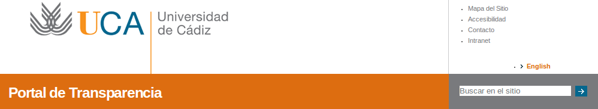
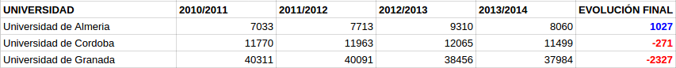
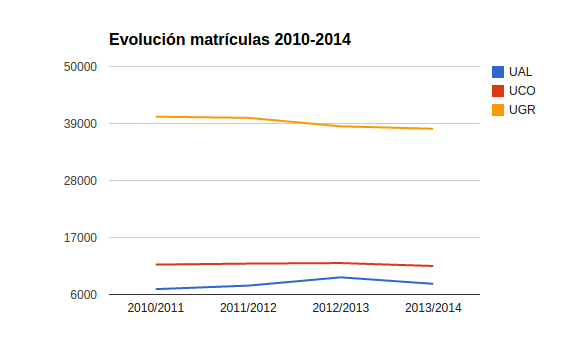

#OpenDataDay
Reto Universidad Transparente
Workteam: @moloco5 @mhmario89 @germaaan_ @sinclair_88 @renatolrr
¿Por qué lo llaman Transparencia cuando quieren decir m...?
Metodología de trabajo


Universidades transparentes en Andalucía
Analizadas bajo los siguientes criterios:
Rendimiento académico Número de matriculaciones
Número de investigaciones Número de cargos académicos
Incorporacion total de personal Número de matriculaciones
Buscador Independiente
Tipo de archivo predominante Contacto
Datos curiosos
Reflexión general
Granada
Nos lo hemos currado.
Almería
Información pública básica. Datos dispersos y sin un orden regular. Posee un buscador pobre y no específico. Todos los documentos son pdfs. No poseen contacto directo.
Sevilla
Un portal independiente pero que sólo contiene redirecciones a páginas o redirecciones a PDFs. No muestra nada de tipo académico, sólo puramente administrativo y económico. Es un portal totalmente independiente.
Huelva
Un portal un poco pobre, con información lo más básica posible y mostrada a partir de enlaces externos o pdfs. También algún xls. Un formulario de contacto que no funciona. No posee un buscador propio. No hay datos de rendimiento ni de matriculaciones.
Córdoba
Una página muy atractiva visualmente, diseño muy trabajado para dar una imagen de claridad y formalidad. Abundan los gráficos. Sin embargo, resulta deficiente en cuanto a lo técnico: los datos se encuentran encerrados en terribles PDF, aunque por lo general, la técnica de ofrecer la información se basa en redireccionar a otras páginas. Es decir, los datos ni si quiera han sido extraídos, en la mayoría de las veces, de ninguna manera. Por otra parte, normalmente la información que se ofrece es bastante básica en el caso de criterios que afectan directamente a datos de interés universitario, como investigación. .
Málaga
Un portal directamente insertado dentro de la página oficial de la universidad y basado en la publicación de información mediante enlaces externos, por lo que es fácil perderse y difícil de manejar (pérdida de paciencia).
Jaén
La mayor parte de los datos son gráficos. No hay datos concretos sobre matriculaciones. Posee un buscador pobre. No es un portal independiente. No ofrece un contacto específico.
Cádiz
En general bien, pero faltarían los datos abiertos. Se publican matriculaciones y datos de investigaciones. Posee un buscador propio y se trata de un portal independiente.
Datos económicos
Evolución parados/demandantes de empleo.

Matriculaciones
Datos más relevantes en Andalucía.
Comparativa matrículas.
Evolución matrículas.
Comparativa Granada Córdoba.

Indice de rendimiento a nivel nacional
(mientras existió)
Premios excelencia académica del ministerio.